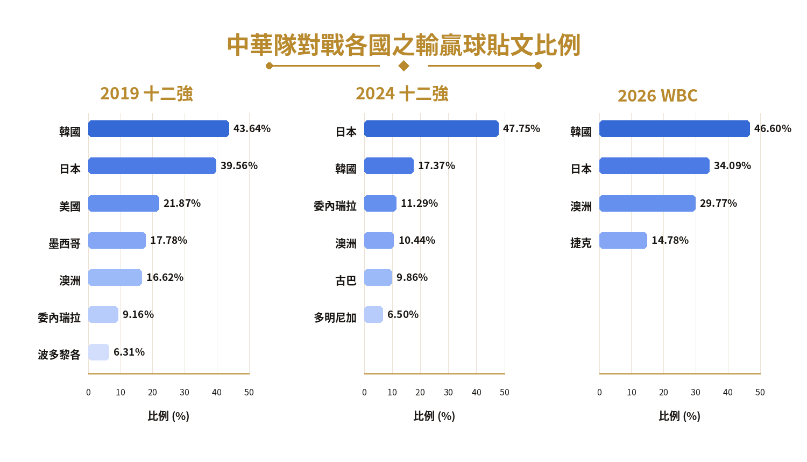
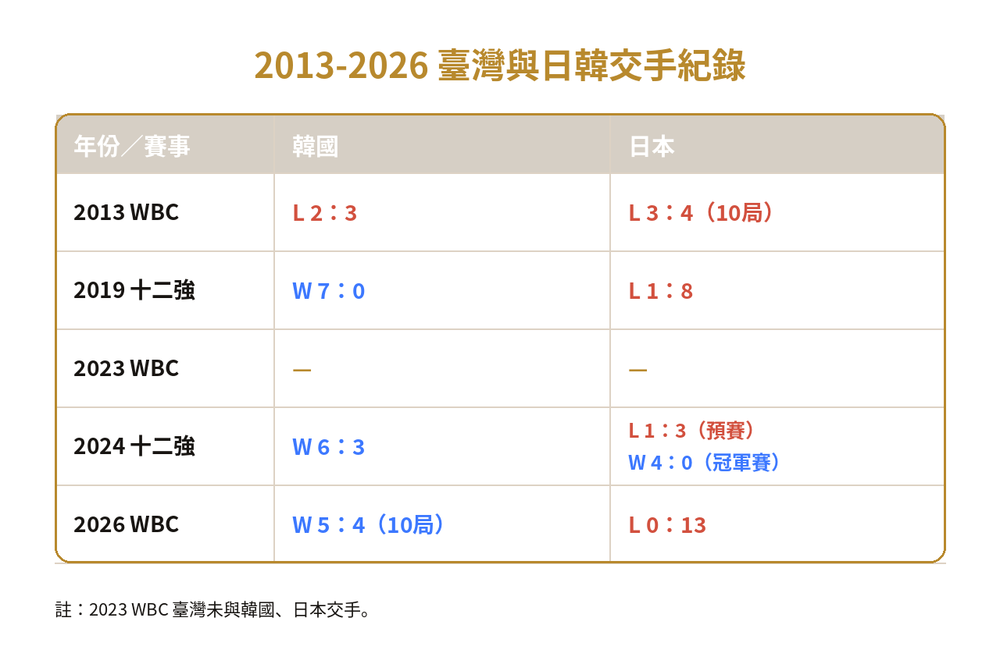

[討論] 最後那個雙殺，你重播了幾次？
拿冠軍已經過了兩天
第一天晚上沒事就一直重播到快3點才睡
這兩天拿起手機沒事還是會一直播最後的雙殺
看了還是很感動又激動
這要看了好幾年國際賽吃鍋貼後
才能懂感動中的感動啊！！
從遺憾、抓戰犯到集體應援。一段關於台灣棒球、國家隊與球迷情緒如何被一次次國際賽改寫的故事。
從2013年經典賽的台韓大戰與台日大戰的遺憾、2019年十二強的7：0扣倒韓國的意外之喜，到2024年東京巨蛋首次奪冠的振奮。臺灣球迷看待國家隊的方式，在一次次國際賽中悄悄轉變。
這些比賽留下的，除了勝負與數字，更多的，是球迷一次次面對希望、失落與不甘的集體情緒經驗。過去，輸球伴隨而來的，往往是球迷鋪天蓋地的批評。球迷試圖再一次次「抓戰犯」的過程裡，平息與勝利失之交臂的悵然；教練調度和球員失誤，常是賽後討論的焦點。
不過，在近年的PTT棒球板上，這樣的反應慢慢出現變化。球迷仍會在乎輸贏，也會失望、憤怒與批評，但他們不再只以情緒性責備作為主要出口。越來越多討論回到了比賽內容、球隊整體表現，甚至在輸球時，也有不少人選擇給予鼓勵及支持。
為了看見這些情緒如何轉變，記者整理2019年至2026年間四次國際賽期間的PTT棒球板貼文與留言，將討論內容分為賽事表現、球員表現、教練調度、制度環境與球迷情緒等類別，進一步分析高留言貼文中的留言風向。
數據顯示，2024年十二強是最明顯的轉折點。這一年變化最大的，不是單一球員或教練調度討論，而是與球迷情緒、國家隊支持和觀賽心情相關的貼文。冠軍經驗讓「支持國家隊」成為PTT棒球板上的主流聲音之一，許多貼文不只是討論比賽結果，而是在回顧臺灣棒球曾經走過的低潮、重新確認自己與國家隊之間的情感連結。
例如賽後一篇〈有人是從中職黑暗期看到現在的嗎？〉，便以資深球迷視角回望臺灣棒球一路走來的低潮與轉變，留言區中，不少人接著分享自己從假球陰影、國際賽失利到2024奪冠的觀賽記憶。這類貼文讓冠軍不只是單場比賽的結果，而搭建了凝聚共同感受的橋樑。
2024年的冠軍經驗將球迷情緒推向高點。不過，到了2026年，當冠軍熱潮退去，球迷必須重新面對勝負壓力與強敵差距時，討論焦點又轉向對比賽內容與整體實力的檢視。網友ryanl在貼文〈台灣這次WBC的及格線〉中就指出，中華隊從自辦熱身賽來看，無論投手、守備或打擊，都沒有十二強「骰到六」的感覺，甚至直言看起來像是「志在參加」。
KEYWORDS
從各年高頻詞與代表性貼文標題，看見球迷注意力如何從檢討、球員表現，逐漸轉向冠軍記憶、宿敵對戰與國家隊情緒。
從高頻詞變化可以看見，球迷討論的焦點並非只是單場勝負。2019年仍可看見「檢討」、「教練」、「投手」、「王柏融」等與戰犯歸因、球員表現相關的詞彙；到了2023年，「謝謝」、「回來」、「Team Taiwan」、「張育成」等字詞增加，顯示國家隊討論開始與情感動員、球員召回和集體應援相連，雖然仍有「抓戰犯」相關的文章，亦有不少貼文在稱讚球隊的表現內容。
2024年十二強奪冠，網路上盛傳「道歉表」迷因，「對不起」、「道歉」、「感動」等詞彙成為當年討論賽事時的主要用詞，除此之外，球迷也重新回望過去對國家隊的懷疑與失落。2026年則出現「日韓」、「實力」、「心態」、「酸民」、「差距」等字詞，代表冠軍記憶退潮後，討論又重新回到宿敵對戰、球隊實力及心態差距與球迷自我檢視之間擺盪。
高留言貼文中，2024 年「支持鼓勵為主」比例上升到 66.2%，明顯高於其他年份，呈現奪冠後支持型回應成為主流的現象。
2024年十二強冠軍賽後，出現大量充滿感性情感的貼文，像是〈連衝兩天東京巨蛋，謝謝每一個人〉、〈今日陳傑憲〉、〈一切都好像跟夢一樣〉、〈這次冠軍含金量有多高？〉、〈臺灣尚勇!!感謝所有人〉等貼文，除詳細描述臺灣球迷在東京巨蛋的應援聲勢、奪冠當下的激動，以及對球員與球隊的感謝外，也流露出對歷史奪冠時刻的激動和感動。這類內容容易帶動和聚集球迷情緒，充分反映了當年貼文以支持型回應為主的特徵。
若單獨觀察四次賽事輸贏球時的PTT貼文，在贏球時「支持／正向」始終是最主要的情緒，且比例從2019年的50.31%上升至2026年的66.45%，顯示只要中華隊贏球，球迷普遍仍以肯定、鼓勵為主。
2024年十二強是情緒結構的明顯轉折點，輸球貼文中的「批評／負向」降至5.69%，顯示即使面對失利，球迷也更傾向採取較為理性且正面的討論方式。不過，到了2026年，輸球貼文的「批評／負向」回升至31.03%，與此同時，「支持／正向」則下降到7.47%。
在網友bandongo(簡單愛)轉貼〈該檢討的是什麼〉的內文中，便直指中華隊驕兵必敗，「出局如風，還以為趕下班，輸球不意外」。留言區則出現「跟驕兵無關，本來就實力差人一截」、「職棒什麼都變好了很多，就是實力只變好了一點」、「贏個一次就飄了」等批評。
儘管如此，仍有不少貼文是以客觀視角出發，選擇用數據說話。如filmystery (P.B. take me to the US)的貼文〈為何講開路先鋒很少提到陳傑憲？〉便是以打擊率、上壘率、長打率、打點與得分等面向切入，分析個別球員戰力，也進一步討論棒次與串聯效率的問題。
在另一位網友lupinlin轉貼〈中華隊遭7局扣倒！日本球迷都驚訝：沒想到差距這麼大〉的內文中也可以看到，即使鄭浩均在對戰日本時發揮不佳，發文者並沒有一味指責，而是以層級差距與心態問題，解釋球員的比賽表現。
儘管留言中仍有批評球員的留言，但也有部分可以看見球迷對失誤情況的理解，或者回到戰術層面分析問題根源是否源自他處，如：「能說美美的曲球不錯，但遇到的是大聯盟五十轟的強打，十二強的打者應該就是普通高飛球了」、「這兩場把教練調度拉下神壇，情蒐理解多少，選手狀況掌握多少都是問號」、「經典賽的球數限制，調度比12強難上很多」等。

在所有交戰國家中，日韓兩國與中華隊碰頭，總是最受球迷關注，也是最教人緊張、血脈賁張的戰役。

攤開自2013年WBC經典賽至今，臺灣與日韓兩國的交手紀錄，包括小組賽及預賽在內，與日本對戰五場中，唯一勝出的是2024十二強；面對韓國，除在2013WBC經典賽敗下陣來，後續皆以勝利之姿作收。
韓國像是臺灣球迷最想打敗的宿敵。在過去國際賽累積的恩怨中，台韓戰往往承載著強烈的勝負情緒。對不少球迷來說，贏韓國更像是證明臺灣在亞洲棒球版圖中有其地位。
相比韓國，日本則更像是一堵高牆。不管是2013年WBC延長賽惜敗日本的痛心疾首，還是2019年十二強的七分之差，長期面對日本的挫敗，不斷刻畫臺灣與日本層級差距的想像。直到2024年十二強冠軍賽，中華隊以4：0擊敗日本，那堵長年存在於球迷心中的高牆，才終於被推倒。
也因此，面對韓國與日本時，球迷的情緒並不相同。對上韓國拿下的勝利，常帶有釋放、雪恥與證明自己的意味；對日本的比賽，則像是在衡量臺灣棒球水平距離頂尖層級還有多遠。前者牽動宿敵記憶，後者牽動實力焦慮。
2024十二強奪冠後，〈Re: [討論] PTSD到底有多重〉這篇貼文將臺灣對日比賽置於長期「恐日」記憶與創傷的脈絡中，重寫中華隊過去常見的崩盤想像；留言則延伸為對台灣是否終於跨越對日心理障礙的集體討論。
不難發現，即使中華隊在比賽途中領先、最終跨越了戰勝日本隊的高牆，球迷仍抱持著「既期待又害怕受傷害」的心情觀賽。
2026WBC經典賽的台韓之戰讓全國球迷再次陷入瘋狂。賽後，一篇名為〈看完台韓戰是不是被淘汰也沒差了〉吸引不少網友留言。發文者在貼文中寫道：「如題。看很多人覺得，看完台韓戰就值得了，被淘汰也沒差，如果能順便拉下韓國更爽。」
留言處大多網友也表示，即使最終無緣晉級，光是擊敗韓國就足夠滿足。
這些留言都反映出，球迷在面對前兩戰的失利之後，將情緒重心轉向「贏韓國能夠證明中華隊仍有競爭力」的象徵性意義。
對長期看球的球迷而言，近年球迷討論方式的改變，和棒球知識、數據資訊的普及有關。當更多人開始理解投手調度、打擊內容、守備和比賽細節，輸贏便不再只是「誰打不好」或「誰害球隊輸」的單一結果。
資深球迷小張觀察，由於近年棒球數據與知識更加發達，球迷開始不再只用結果判斷球員表現，「大家不再單純用『打得好或不好』去評價球員，而是會開始理解球員實際的表現內容。」
另一位球迷洪翊程也指出，現在的球迷越來越會深入了解比賽進行的細節，找出導致輸贏更客觀的原因，例如投手今天控球太差、野手沒把握得分機會等，「比較少抓著一位球員無腦的罵他爛。」
談到球迷對國家隊的信心和態度轉變，小張則說：「以前球迷比較容易在輸球後直接責怪球員或教練，但現在因為球員整體實力提升，大家開始比較願意相信球隊，也會更期待球隊的比賽內容、相信球員能夠打出好的表現。」
對這些球迷來說，當他們看見中華隊輸球時，依然會感到失望、生氣和扼腕，只是，他們已經能夠理解一場比賽為何會輸，也相信這支國家隊值得期待，「看比賽的時候就是一邊緊張，但一邊希望相信他們（中華隊）會贏。」小張笑道。